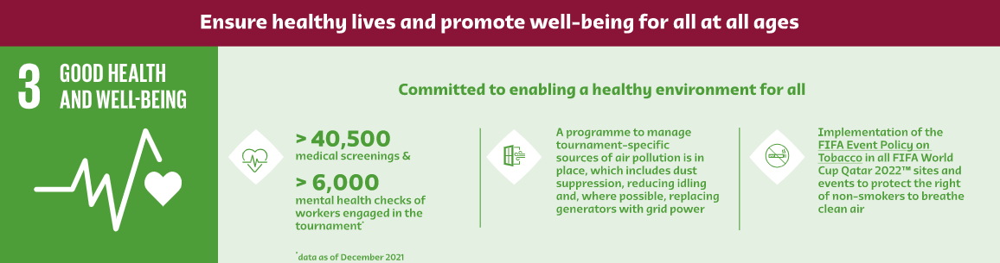
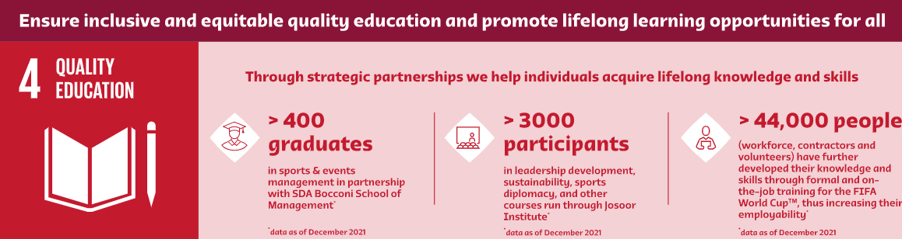
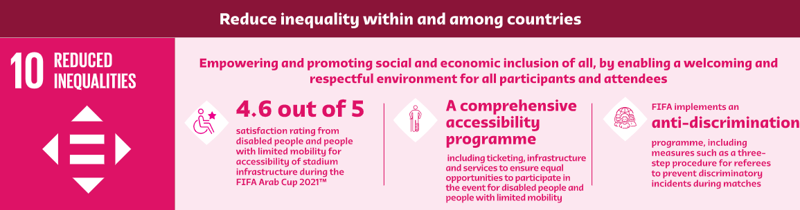

The need for a single body to oversee association football became increasingly apparent at the beginning of the 20th century with the increasing popularity of international fixtures. The Fédération internationale de Football Association (FIFA) was founded in the rear of the headquarters of the Union des Sociétés Françaises de Sports Athlétiques (USFSA) at the Rue Saint Honoré 229 in Paris on 21 May 1904. The French name and acronym are used even outside French-speaking countries. The founding members were the national associations of Belgium, Denmark, France, the Netherlands, Spain (represented by then-Madrid Football Club; the Royal Spanish Football Federation was not created until 1913), Sweden and Switzerland. Also, that same day, the German Football Association (DFB) declared its intention of affiliating through a telegram.
The need for a single body to oversee association football became increasingly apparent at the beginning of the 20th century with the increasing popularity of international fixtures. The Fédération internationale de Football Association (FIFA) was founded in the rear of the headquarters of the Union des Sociétés Françaises de Sports Athlétiques (USFSA) at the Rue Saint Honoré 229 in Paris on 21 May 1904. The French name and acronym are used even outside French-speaking countries. The founding members were the national associations of Belgium, Denmark, France, the Netherlands, Spain (represented by then-Madrid Football Club; the Royal Spanish Football Federation was not created until 1913), Sweden and Switzerland. Also, that same day, the German Football Association (DFB) declared its intention of affiliating through a telegram.
The first president of FIFA was Robert Guérin. Guérin was replaced in 1906 by Daniel Burley Woolfall from England, by then a member of the association. The first tournament FIFA staged, the association football competition for the 1908 Olympics in London was more successful than its Olympic predecessors, despite the presence of professional footballers, contrary to the founding principles of FIFA.
Membership of FIFA expanded beyond Europe with the application of South Africa in 1909, Argentina in 1912, Canada and Chile in 1913, and the United States in 1914.The 1912 Spalding Athletic Library "Official Guide" includes information on the 1912 Olympics (scores and stories), AAFA, and FIFA. The 1912 FIFA President being Dan B Woolfall. Daniel Burley Woolfall was president from 1906 to 1918.
During World War I, with many players sent off to war and the possibility of travel for international fixtures severely limited, the organization's survival was in doubt. Post-war, following the death of Woolfall, the organization was run by Dutchman Carl Hirschmann. It was saved from extinction but at the cost of the withdrawal of the Home Nations (of the United Kingdom), who cited an unwillingness to participate in international competitions with their recent World War enemies. The Home Nations later resumed their membership. The FIFA collection is held by the National Football Museum at Urbis in Manchester, England. The first World Cup was held in 1930 in Montevideo, Uruguay.

| Year | Host | Champion | Runners-up |
|---|---|---|---|
| 1930 | Uruguay | Uruguay | Argentina |
| 1934 | Italy | Italy | Czechoslovakia |
| 1938 | France | Italy | Hungary |
| 1950 | Brazil | Uruguay | Brazil |
| 1954 | Switzerland | West Germany | Hungary |
| 1958 | Sweden | Brazil | Sweden |
| 1962 | Chile | Brazil | Czechoslovakia |
| 1966 | England | England | West Germany |
| 1970 | Mexico | Brazil | Italy |
| 1974 | West Germany | West Germany | Netherlands |
| 1978 | Argentina | Argentina | Netherlands |
| 1982 | Spain | Italy | West Germany |
| 1986 | Mexico | Argentina | West Germany |
| 1990 | Italy | West Germany | Argentina |
| 1994 | United States | Brazil | Italy |
| 1998 | France | France | Brazil |
| 2002 | South Korea / Japan | Brazil | Germany |
| 2006 | Germany | Italy | France |
| 2010 | South Africa | Spain | Netherlands |
| 2014 | Brazil | Germany | Argentina |
| 2018 | Russia | France | Croatia |
| 2022 | Qatar | Argentina | France |
| Rank | National Team | Goal Scored |
|---|---|---|
| 1 | Brazil | 237 |
| 2 | Germany | 232 |
| 3 | Argentina | 152 |
| 4 | France | 136 |
| 5 | Italy | 128 |
| 6 | Spain | 108 |
| 7 | England | 104 |
| 8 | Netherlands | 96 |
| 9 | Uruguay | 89 |
| 10 | Hungary | 87 |
 Coca Cola
Coca Cola  Adidas
Adidas  Visa
Visa  Qatar Airways
Qatar Airways  McDonald
McDonald